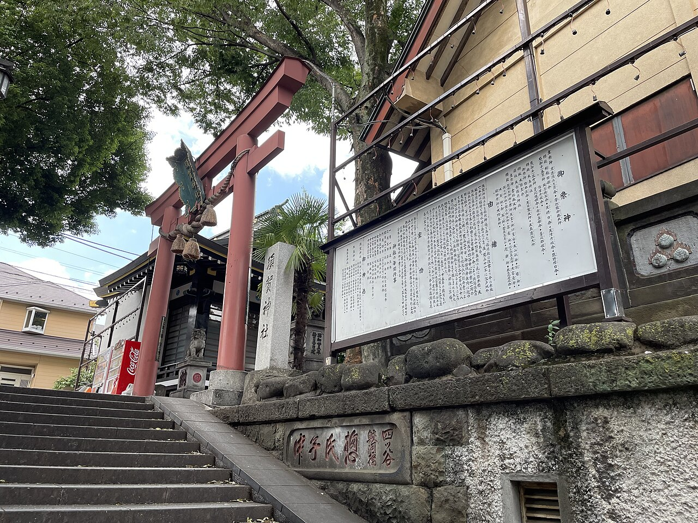
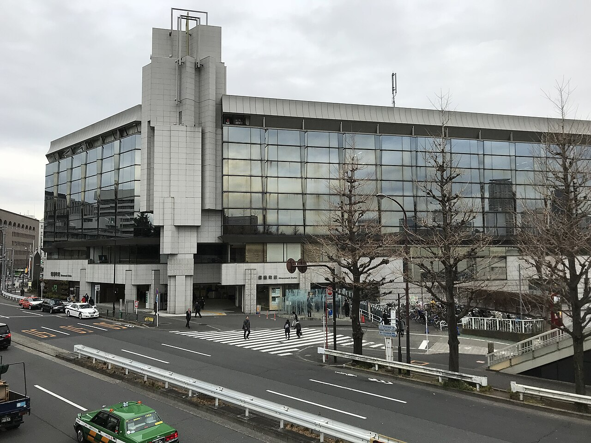
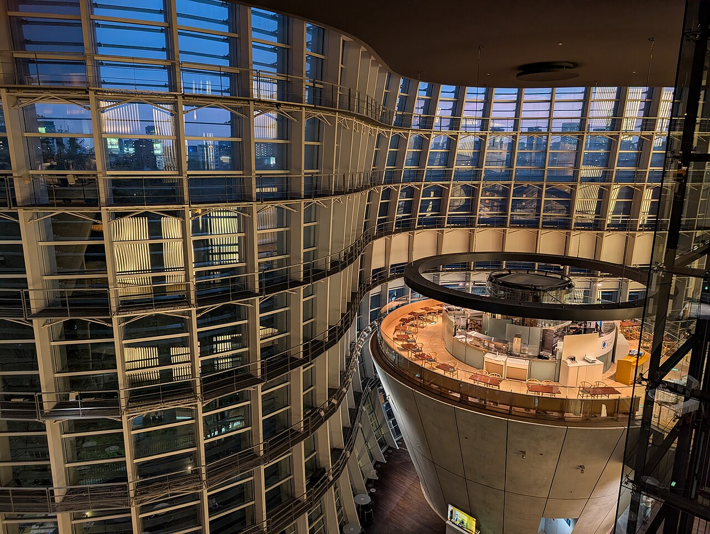
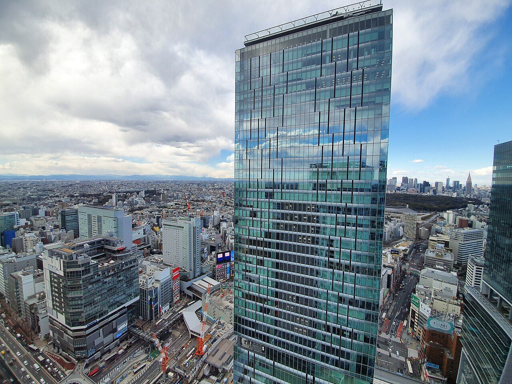
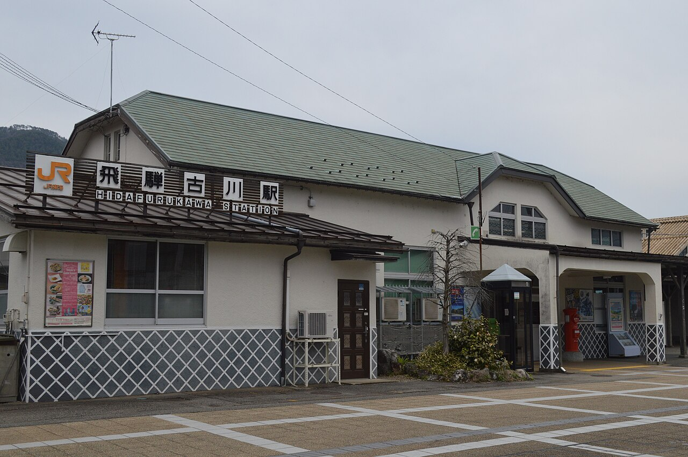
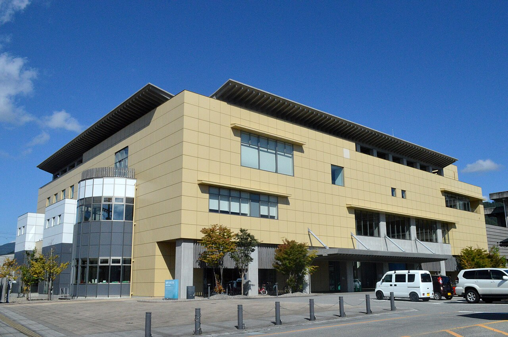
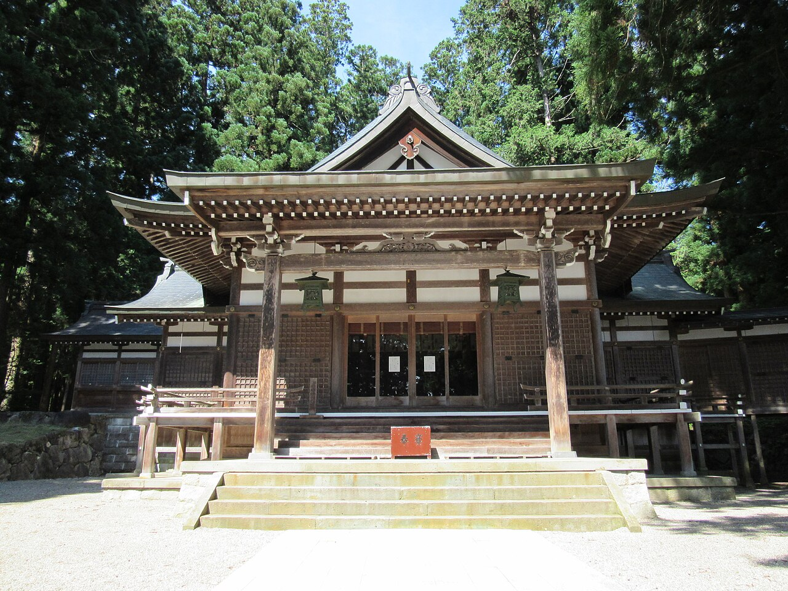
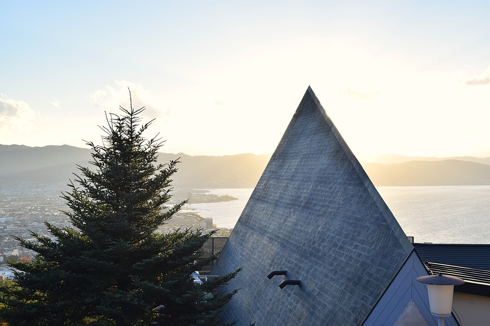

📱 出發前的準備
| 準備 | 說明 |
|---|---|
| 截圖電影畫面 | 把每個場景的電影截圖存在手機相簿，到現場拿出來比對角度，這是聖地巡禮最重要的技巧 |
| 開啟格線 | 相機設定裡打開「格線」，構圖時比較好對齊 |
| 清潔鏡頭 | 用眼鏡布擦乾淨，夏天容易沾到指紋和汗水 |
| 熟悉超廣角 | iPhone 的 0.5x 或 Android 的超廣角鏡頭，新海誠的畫面常用廣角 |
| 小腳架或手機夾 | 夜景、黃昏時很好用。人多的地方請不要使用 |
| 行動電源 | 拍照很耗電 |
🎬 新海誠風格的拍攝心法
- 天空佔畫面一半以上：藍天白雲、夕陽、黃昏都要拍進去。
- 低角度往上拍：蹲低把手機放低，讓建築、天空顯得更壯闊。
- 逆光、光暈：讓太陽在畫面邊緣，拍出光暈（lens flare），很有電影感。
- 黃昏之時：日落前後 30 分鐘天空的顏色最豐富，就是電影的「黃昏之時」。
- 重現劇中動作：讓家人站在主角的位置做出一樣的動作，例如回頭、伸手、擦身而過。
Day 2｜東京

⛩️ 須賀神社男坂階梯
🎬 結尾瀧和三葉在階梯上擦身而過、回頭相認
- 時段：早上 8:30～9:30，人少、光線柔和。
- 經典構圖：站在階梯最下方的馬路對面往上拍，紅色欄杆放在畫面正中間，左右對稱。直拍就是電影海報的構圖。
- 鏡頭：用 1x，避免超廣角讓階梯變形。站遠一點用 2x 可以壓縮距離，讓階梯看起來更陡。
- 重現場景：兒子和女兒一上一下站在階梯兩側，擦身而過後同時回頭，用連拍抓回頭的瞬間。
- 另一個角度：從階梯上方往下拍，拍進下方街道和遠方建築。
注意階梯下方的來車，不要站在馬路中間。居民經過時讓開。

🌉 JR 信濃町站天橋
🎬 瀧上學途中經過的天橋和街景
- 時段：早上順路經過即可；想要電影感可以傍晚藍調時刻再來。
- 構圖：站在天橋上往新宿方向拍，把 NTT docomo 代代木大樓（尖塔大樓）放進畫面。
- 鏡頭：2x 或 3x 長焦，把遠方高樓拉近，就是電影裡的壓縮感。
- 加分畫面：等黃色的總武線電車從下方通過時連拍。
天橋是行人通道，請靠邊拍照。

🏛️ 國立新美術館
🎬 瀧和奧寺學姐約會的咖啡廳
- 倒圓錐：站在 1 樓正下方往上拍，用 0.5x 超廣角拍出壯觀感。
- 俯拍咖啡廳：到 3 樓往下看，可以拍到倒圓錐頂端的咖啡廳全景，最接近電影的角度。
- 玻璃帷幕：波浪型玻璃牆搭配自然光，可以拍家人站在玻璃牆前的剪影。
- 咖啡廳內：坐靠窗座位，拍蛋糕和飲料加上背後的玻璃帷幕。
咖啡廳裡不要拍到其他客人。特展區通常禁止拍照，請看現場標示。

🏙️ 六本木之丘 Tokyo City View
🎬 瀧和奧寺學姐約會時的東京俯瞰景色
- 構圖：東京鐵塔方向是最經典的畫面。
- 消除玻璃反光（最重要）：① 手機貼緊玻璃；② 用手或深色衣服遮住手機周圍；③ 避免背後有燈光。
- 鏡頭：1x 或 2x，超廣角容易拍到玻璃邊框。
- 全景：用全景模式拍 360 度的東京。
Day 3｜澀谷（不是取景地，但很好拍）

🌆 SHIBUYA SKY
- Sky Edge：讓家人站在頂樓玻璃角落，用 0.5x 超廣角往上拍，背景是天空和城市。
- 十字路口：往下拍澀谷十字路口，綠燈時人潮湧出最壯觀。
- 夕陽剪影：對著天空測光，讓家人變成黑色剪影。
頂樓禁止自拍棒和腳架，手機請握緊。
Day 4｜飛驒古川

🌉 JR 飛驒古川站跨站天橋
🎬 瀧來找三葉時，站在天橋上看小鎮和群山
- 構圖：站在天橋上往北拍，把鐵軌、月台、遠方的山放進畫面，對照電影截圖找角度。
- 隔著玻璃拍：手機貼緊玻璃避免反光。
- 電車畫面：查好時刻，等特急 Hida 進站時拍。
- 重現場景：讓家人站在窗邊望向遠方，從側面或背面拍。
不要擋住通道。

📚 飛驒市圖書館
🎬 瀧在圖書館查糸守町的資料
- 先申請：要先到櫃台申請拍照許可，可能需要填表。
- 構圖：拍木頭書架和閱覽桌，用對稱構圖，對照截圖找到瀧坐的位置。
- 光線：利用窗戶自然光，不要開閃光燈。
- 重現場景：讓家人坐在閱覽桌前翻閱資料，從側面拍。
不要拍到其他讀者，關掉快門聲，保持安靜。

⛩️ 氣多若宮神社
🎬 宮水神社的參考原型之一
- 構圖：從鳥居下方往上拍石階，讓鳥居當畫框框住後方的神社。
- 鏡頭：0.5x 超廣角，同時拍進鳥居和石階。
- 氛圍：拍下樹林間照進來的陽光，很有神聖感。
參拜後再拍照，不要擋住其他參拜者。
Day 7｜立石公園 最重要

🌇 立石公園
🎬 糸守湖的俯瞰角度
提早到，分三個時段拍：
- ① 日落前（約 18:00）：拍藍天和諏訪湖全景，用全景模式拍整個湖。
- ② 黃昏之時（約 18:30～19:00）🌟：天空從橘色變成粉紫色。讓家人站在欄杆前，對著天空測光拍剪影。
- ③ 藍調時刻（日落後 20～30 分鐘）：天空變深藍、湖邊燈光亮起，夜景最美。
- 構圖：諏訪湖放在畫面下三分之一，上方留給天空。
- 夜景模式：手保持不動 3 秒，把手機靠在欄杆上更穩。
- 剪影技巧：點螢幕上最亮的天空來測光。
- 重現場景：兒子和女兒背對背站在欄杆前，或一起伸手指向天空，就像看彗星的畫面。
傍晚蚊子很多，先噴防蚊液。天黑後帶手電筒注意腳下。
🎨 後製：調出新海誠風格
推薦免費的 Lightroom Mobile，或手機內建的編輯功能：
| 調整項目 | 建議方向 | 效果 |
|---|---|---|
| 曝光 | 略為調亮 | 畫面明亮清透 |
| 亮部 | 降低 | 保留天空的雲層細節 |
| 陰影 | 提高 | 暗部也有細節，接近動畫感 |
| 鮮豔度 | 提高 | 顏色更飽和但不假 |
| 色溫 | 白天偏冷（藍），黃昏偏暖（橘） | 加強天空顏色 |
| HSL 藍色 | 提高飽和度 | 藍天更藍 |
| HSL 橘色 | 提高亮度 | 膚色比較好看 |
| 清晰度 | 略為降低 | 畫面柔和，更有動畫感 |
進階：用 App 加上光暈效果，模擬新海誠招牌的逆光感。同一場景拍一張和電影截圖並排，做成「電影 vs 現實」對比圖，分享時很受歡迎。
⚠️ 拍攝禮儀
| 注意事項 | 說明 |
|---|---|
| 🏠 尊重居民 | 須賀神社、信濃町一帶是住宅區，降低音量、不要擋路 |
| 📵 禁止空拍機 | 東京市區和人多的地方禁止使用空拍機，違規會被罰 |
| 🦯 腳架 | 人多的地方請不要使用 |
| 🚫 不要拍到別人 | 日本很重視肖像權，避免拍到路人的臉 |
| ✋ 先問再拍 | 圖書館、神社內部等地點，先確認是否可以拍照 |